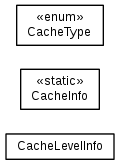

JavaScript is disabled on your browser.
Overview
Package
Class
Use
Tree
Deprecated
Index
Help
WildFly Common 1.0.0.Alpha2
Prev Package
Next Package
Frames
No Frames
All Classes
Package org.wildfly.common.cpu
A set of utility classes to determine information about the runtime environment's CPU configuration.
See:
Description

Class Summary
Class
Description
CacheInfo
A class which exposes any available cache line information for the current CPU.
CacheLevelInfo
Enum Summary
Enum
Description
CacheType
The type of cache.
Package org.wildfly.common.cpu Description
A set of utility classes to determine information about the runtime environment's CPU configuration.
Author:
David M. Lloyd
Overview
Package
Class
Use
Tree
Deprecated
Index
Help
WildFly Common 1.0.0.Alpha2
Prev Package
Next Package
Frames
No Frames
All Classes
Copyright © 2015 JBoss, a division of Red Hat, Inc.